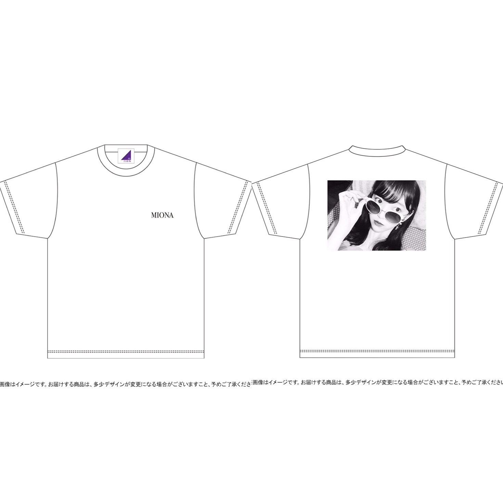
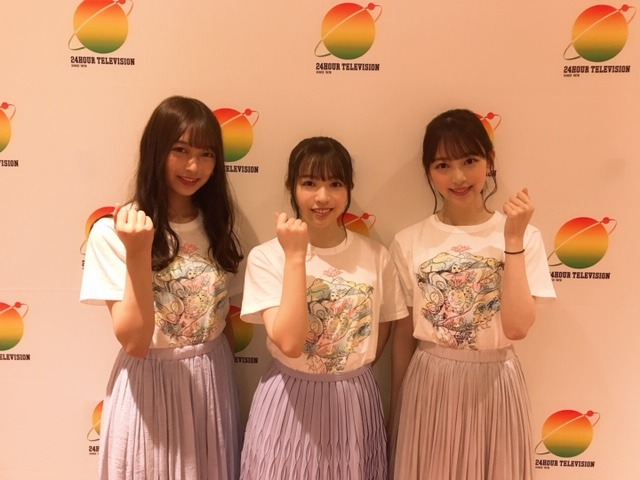

2019/0826Mon生誕Tの季節ですね
街を歩いているときめちゃめちゃに
すきな香りの方が通り過ぎて
でもどなたかわからなくてキョロキョロ
探しちゃいました、、、
いい匂いすぎた、、、香水聞きたかったな、、、
聞けないけど、、、
改めて匂いフェチだなあ~

2019年の生誕Tができました
カジュアルシンプルだけど、洗練されたトレンド感も出したくて
表は、MIONAのロゴをさりげなく
裏は、まだ世に出したことのないプライベート写真の堀にしてみました！
どうかな~❤︎？
去年の夏、蘭世と遊びに行ったときの一枚です☺︎
今年の夏はまだ蘭世と遊びに行けてないや
行きたい~
生誕Tもあと何枚デザインできるのかなぁ、
とかそんなことも考えながら男女ともに
私服でも着やすいようにしました
今しか予約できないので、ぜひぜひ♫
これ着て握手会やライブやイベントに
来てくださってもすごく嬉しいし
夏だと、男性はデニムに白スニーカーを
女の子はデニムショーパンにインしたり
秋冬はこの上に黒のおっきめジャケットとか
コートなんかを羽織っても
モノトーンでオシャレかなぁと♡、
私、男女問わずモノトーンコーデの方がすきで、
全身黒、全身白、黒と白、みたいな
シンプルで洗練された感じに惹かれます
私も握手会やレコメン！なんかで着ます！
おそろいしましょ~(^-^)

髪色をちょっと早めの、秋仕様にしました~
わ~い
『モンブランベージュ』です♡
今年の秋は、茶色をたくさん取り入れたくて
まずは髪色から！笑
洋服もブラウンやベージュのものを集めなきゃ。
秋服も楽しみだなあ

コスメキッチン大好き人間なのですが
最近、新しい香水を買いました◎
オーガニックでちょい大人な香りが堪りません...♡

24時間TVもありがとうございました~

プリンプリン
では
2019/08/26 18:54
コメント(226)
更新ありがとうございます。
髪色かわいい！
わたしも未央奈みたいな色にしたい
わたしも未央奈みたいな色にしたい
未央奈ちゃん、生誕Tシャツ予約したよ！！
今回のデザインも可愛くてすごく好き☺️
握手会やライブで絶対に着ていくからね！！！
今回のデザインも可愛くてすごく好き☺️
握手会やライブで絶対に着ていくからね！！！
更新ありがとう!
昨日の24時間テレビみたよー
改めてSing Out!は良い歌だと思いました!
24時間テレビをきっかけに沢山の人にこの曲を知ってもらえるといいね
生誕Tシャツもおしゃれですね
シンプルで普段使いやすそう!
街中でこれ着たらみんな裏の堀ちゃんのかわいさに見とれちゃいそう!
体調に気をつけてこれからも頑張ってね!
昨日の24時間テレビみたよー
改めてSing Out!は良い歌だと思いました!
24時間テレビをきっかけに沢山の人にこの曲を知ってもらえるといいね
生誕Tシャツもおしゃれですね
シンプルで普段使いやすそう!
街中でこれ着たらみんな裏の堀ちゃんのかわいさに見とれちゃいそう!
体調に気をつけてこれからも頑張ってね!
未央にゃブログ更新有難う
そして再びの絢音ちゃん(・∀・)♪
有難う(^人^)
めっちょ可愛い(๑´ω`๑)♡
そして再びの絢音ちゃん(・∀・)♪
有難う(^人^)
めっちょ可愛い(๑´ω`๑)♡
24時間テレビ見たよー！
最近は黒Tよりも白Tの方がよく着るから白色なのはすごい嬉しい(о´∀`о)あとボディバッグ(？)を使う時も写真が後ろだからデザインがかからないし♬
全身白とか全身黒とかの全身ほぼ一色のコーデを着こなせる人はすごいなぁと思います、自分はつい黒白青の三色に逃げてしまう笑笑
やっぱ暗めの色も似合うね(^^)あと髪も結構伸びてきたね、名古屋の個握行くのでnewカラー見に行きますね〜
新しい香水って服とかよりも常に感じれるから季節の変わり目に合わせて買い換えるとすごい心地よい気分で次の季節を迎えれるよね〜♪自分は男なので香水だとどうしても苦手意識があるので普段はボディークリームにしてます。
24時間テレビお疲れ様でした！体調の方は大丈夫でしたか？？神宮でのライブもあるので風邪や熱中症など気をつけてくださいね。
嵐の大野くんがデザインした24時間テレビのTシャツのデザイン凄いいいよね！昨日きた服は貰ったのですかね、羨ましいです(о´∀`о)
では！！
全身白とか全身黒とかの全身ほぼ一色のコーデを着こなせる人はすごいなぁと思います、自分はつい黒白青の三色に逃げてしまう笑笑
やっぱ暗めの色も似合うね(^^)あと髪も結構伸びてきたね、名古屋の個握行くのでnewカラー見に行きますね〜
新しい香水って服とかよりも常に感じれるから季節の変わり目に合わせて買い換えるとすごい心地よい気分で次の季節を迎えれるよね〜♪自分は男なので香水だとどうしても苦手意識があるので普段はボディークリームにしてます。
24時間テレビお疲れ様でした！体調の方は大丈夫でしたか？？神宮でのライブもあるので風邪や熱中症など気をつけてくださいね。
嵐の大野くんがデザインした24時間テレビのTシャツのデザイン凄いいいよね！昨日きた服は貰ったのですかね、羨ましいです(о´∀`о)
では！！
更新待ってました！！
誕生Tおそろにしましょ〜
プライベートの堀ちゃんも
お仕事中の堀ちゃんも
いつでも堀ちゃんは、最強説！
私も匂いフェチ〜
未央奈ちゃんとは気が合う気がする！
髪色、秋って感じがする！
もう夏終わっちゃうね…
満喫出来た？
私は、夏らしいことしてない！笑
お祭りは行ったけど。
次の更新待ってます
誕生Tおそろにしましょ〜
プライベートの堀ちゃんも
お仕事中の堀ちゃんも
いつでも堀ちゃんは、最強説！
私も匂いフェチ〜
未央奈ちゃんとは気が合う気がする！
髪色、秋って感じがする！
もう夏終わっちゃうね…
満喫出来た？
私は、夏らしいことしてない！笑
お祭りは行ったけど。
次の更新待ってます
Tシャツ買おうか迷ってる…
24時間テレビ見たよっ！
24時間テレビ見たよっ！
ブログ更新ありがとうございます。
体調、戻ったようで、うれしいです。
では。
体調、戻ったようで、うれしいです。
では。
チャァオ～～!☆彡
みおちゃんは～～～⤴️⤴️❕・・・
プリンセス～～～～♪♪❤️❤️❤️
プリン♪♪プリン♪♪❤️❤️❤️
(*^▽^)/★*☆♪❤️❤️❤️❤️❤️
(プリンセス物語の歌、久しぶりに思い出したよ❕笑顔)
うちの姉は、すごくいい～匂いがするよ～❕❤️❤️❤️❤️❤️笑顔
たまに、街でいますよねぇ～～❕❤️❤️❤️❤️❤️笑顔
☆会津＊ONEより☆彡
みおなー！！
生誕Tめっちゃおしゃれ⸜❤︎⸝
普通にほしい。。
買うしかないよねこれ、、
ってことで未央奈とやんちゃんの生誕T予約した！笑
もうお金やばいって思ったけど未央奈のこと考えたら余裕で
買っちゃう
未央奈のためにバイト頑張ってお金貯める！
もちろん生誕祭も行くよ！！！！
おめでとうって言いに行く！！
好きって言いに行く！！
生誕Tめっちゃおしゃれ⸜❤︎⸝
普通にほしい。。
買うしかないよねこれ、、
ってことで未央奈とやんちゃんの生誕T予約した！笑
もうお金やばいって思ったけど未央奈のこと考えたら余裕で
買っちゃう
未央奈のためにバイト頑張ってお金貯める！
もちろん生誕祭も行くよ！！！！
おめでとうって言いに行く！！
好きって言いに行く！！
指輪どこのブランドですかー？
みおなちゃん指細いから
お店でちゃんと測ってもらったのか
聞きたいです！
みおなちゃん指細いから
お店でちゃんと測ってもらったのか
聞きたいです！
めっちゃ可愛いやん！
神宮楽しみにしてるよ
堀ちゃん連日の更新ありがとう。
生誕グッズ注文したよ、でもタオルだけだ(汗)
Tシャツもほしくなってきたな、まだ注文間に合うのかな?
デニムに白スニーカーか
堀ちゃんレコメンとかでよくデニム履いてるよね
こういうの好きなんだ。
ふむふむ、勉強になります(笑)
モンブランベージュめちゃ似合ってるよ、
当たり前だけどかわいいです。
すごい元気そうで良かった、まだ心配してたよ。
神宮楽しみです、
あー早く金曜にならないかな。
ではでは
バイバイキーン
生誕グッズ注文したよ、でもタオルだけだ(汗)
Tシャツもほしくなってきたな、まだ注文間に合うのかな?
デニムに白スニーカーか
堀ちゃんレコメンとかでよくデニム履いてるよね
こういうの好きなんだ。
ふむふむ、勉強になります(笑)
モンブランベージュめちゃ似合ってるよ、
当たり前だけどかわいいです。
すごい元気そうで良かった、まだ心配してたよ。
神宮楽しみです、
あー早く金曜にならないかな。
ではでは
バイバイキーン
こんばんは。
髪色似合って可愛いですね。
髪色似合って可愛いですね。
チャァオ～～!☆彡
プリンセスみおちゃん❕・・・・
プリンメンバ～～～⤴️⤴️
まさに、美女3姉妹❕❤️❤️❤️❤️❤️笑顔
☆会津＊ONEより☆彡
未央奈ちゃんブログ更新ありがとう！
生誕T買ったよ〜！
シンプルで好き♡
普段も着ようと思う〜(⁎˃ᴗ˂⁎)
香水買おうかな♡
いい色だね( ⸝⸝⸝¯ ¯⸝⸝⸝ )
ワンピースの色も良き！
生誕T買ったよ〜！
シンプルで好き♡
普段も着ようと思う〜(⁎˃ᴗ˂⁎)
香水買おうかな♡
いい色だね( ⸝⸝⸝¯ ¯⸝⸝⸝ )
ワンピースの色も良き！
みおなさんの生誕月は知ってますよ。
当日には必ずケーキこうてお祝いしますからね。
当日には必ずケーキこうてお祝いしますからね。
ブログ更新ありがとう！
未央奈ちゃん髪色似合ってる、何色にしてもどんな長さでも好き！
生誕tも買ったよー
これからもずっと応援してます！！！
未央奈ちゃん髪色似合ってる、何色にしてもどんな長さでも好き！
生誕tも買ったよー
これからもずっと応援してます！！！
ブログ更新ありがとう！
24時間テレビ観たよ！
体調の方はどうかな？
神宮ライブでの未央奈さんのパフォーマンスを楽しみにしてます！
生誕Tシャツ、オシャレ！
秋仕様の髪色も着ている服も素敵です！
24時間テレビ観たよ！
体調の方はどうかな？
神宮ライブでの未央奈さんのパフォーマンスを楽しみにしてます！
生誕Tシャツ、オシャレ！
秋仕様の髪色も着ている服も素敵です！
好き。
生誕Ｔ、予約しました！
これを着て、外出するぞ！！
これを着て、外出するぞ！！
買いました
今年は生誕Tシャツ買いました！とてもかわいい！着るの楽しみ！
生誕Tシャツ購入しました！
乃木坂が好きな知り合いに逢いに行く時に来ていこうと思います笑
手に入れたからにはしっかりとコーディネートを考えて活用していきたい…！！
またブログ待ってます(^^)
乃木坂が好きな知り合いに逢いに行く時に来ていこうと思います笑
手に入れたからにはしっかりとコーディネートを考えて活用していきたい…！！
またブログ待ってます(^^)
ブログ更新ありがとう♡
もうかわいすき゛る！！！
体調は少し良くなったのかな？？少しでも良くなったらうれしい！♡
生誕祭Tシャツめちゃ好きなデザイン…絶対握手会に着ていくからね~！！！
24時間TV本当にお疲れ様でした☺︎sing out ！の動画可愛すぎてインスタにあげちゃったよ~☺︎
プリン会の写真もありがとう♡私の癒しです…（ ; ; ）
ライブもあるから体調には気をつけてください！
もうかわいすき゛る！！！
体調は少し良くなったのかな？？少しでも良くなったらうれしい！♡
生誕祭Tシャツめちゃ好きなデザイン…絶対握手会に着ていくからね~！！！
24時間TV本当にお疲れ様でした☺︎sing out ！の動画可愛すぎてインスタにあげちゃったよ~☺︎
プリン会の写真もありがとう♡私の癒しです…（ ; ; ）
ライブもあるから体調には気をつけてください！
あっあと、オススメしてもらったmiumiuの香水この間買ったの~♡見た目も可愛いくてまだ使えてない…笑
握手会にしていくね！
握手会にしていくね！
生誕Tシャツあと何回見ることが出来るだろう…センチメンタルな気分。夏の終わりが近づいているからでしょうか。私は蝉のひぐらしの鳴き声が聞こえてくると夏の終わりを感じます。未央奈ちゃんはどんな時に感じますか？
残された時間は長いようであっという間なのかも…アイドルである未央奈ちゃんをこれからも丁寧に応援していくよ。
残された時間は長いようであっという間なのかも…アイドルである未央奈ちゃんをこれからも丁寧に応援していくよ。
未央奈ちゃんこんばんは！ありがとうございます‼お疲れ様です！ありがとうございます‼頑張ります‼頑張って下さい。気をつけて下さい！お疲れ様でした。
ブログありがとう！！
モバメ見たけど、言いたい人には言わせておけばいいと思うよ！！
そういう事言う人は、少数派の更に少数派だよ！！
こういう時こそ、テキサスチェーンソーとか
東京残酷警察を見ましょう！！また書くね～
モバメ見たけど、言いたい人には言わせておけばいいと思うよ！！
そういう事言う人は、少数派の更に少数派だよ！！
こういう時こそ、テキサスチェーンソーとか
東京残酷警察を見ましょう！！また書くね～
更新ありがとう！
これからも頑張って！
神宮楽しんでください！
これからも頑張って！
神宮楽しんでください！
未央奈ちゃん、ブログ更新ありがとう！
体調はもう大丈夫ですか？
今日、生誕祭Tの支払いを済ませてきました！
初めての生誕Tは未央奈の生誕Tです！
届くのが楽しみです
あ、そういえばきのうあで夏休みが終わってしまいました泣
では、体調には気をつけてください！
ななみな
体調はもう大丈夫ですか？
今日、生誕祭Tの支払いを済ませてきました！
初めての生誕Tは未央奈の生誕Tです！
届くのが楽しみです
あ、そういえばきのうあで夏休みが終わってしまいました泣
では、体調には気をつけてください！
ななみな
いよいよ神宮ですね！私もライブビゥーイングで見る予定です。全力で楽しんでください！
こんばんは
自分もいい匂いは大好きですよ～
生誕Tのバックプリントが斬新ですねー！
蘭世ちゃんとの写真も懐かしいですよね♡
自分は通年シンプルコーデばかりですが、
今夏は久しぶりに柄シャツを着ましたよ♪
髪は切らずに秋仕様にしたのですねー！！
洋服もすっかり秋色になってますよね～♡
24時間TVではプリン会も揃ってましたね！
プリン会での活躍もとっても楽しみですよ☆
ブログからも秋の匂いがしてきました～☺
自分もいい匂いは大好きですよ～
生誕Tのバックプリントが斬新ですねー！
蘭世ちゃんとの写真も懐かしいですよね♡
自分は通年シンプルコーデばかりですが、
今夏は久しぶりに柄シャツを着ましたよ♪
髪は切らずに秋仕様にしたのですねー！！
洋服もすっかり秋色になってますよね～♡
24時間TVではプリン会も揃ってましたね！
プリン会での活躍もとっても楽しみですよ☆
ブログからも秋の匂いがしてきました～☺
未央奈ブログ更新ありかと！
24時間テレビのTシャツめっちゃかわいい〜
これからも一番応援してる！
24時間テレビのTシャツめっちゃかわいい〜
これからも一番応援してる！
未央奈お疲れ様！
ブログ更新ありがとう！
匂いフェチおれもだよ笑
通りすがりの人とかよくかいでしまう笑
生誕Tと生誕タオル買った！
生誕Tめっちゃ可愛い！
蘭世と遊んだ時の写真なんだね！
色んな時に着てくね！
未央奈とおそろい出来てうれしい！
未央奈が気に入ってくれそうな服着よ！笑
髪色めっちゃ似合ってるね！
24時間テレビみたよ！
プリン会で撮ったんだ！
これからも応援してる！
がんばれー！
ブログ更新ありがとう！
匂いフェチおれもだよ笑
通りすがりの人とかよくかいでしまう笑
生誕Tと生誕タオル買った！
生誕Tめっちゃ可愛い！
蘭世と遊んだ時の写真なんだね！
色んな時に着てくね！
未央奈とおそろい出来てうれしい！
未央奈が気に入ってくれそうな服着よ！笑
髪色めっちゃ似合ってるね！
24時間テレビみたよ！
プリン会で撮ったんだ！
これからも応援してる！
がんばれー！
生誕Ｔめっちゃ可愛い 今日さなの誕生日なの！！！今日ブログ更新してくれてありがと！！！堀ちゃん大好き！！
ブログ更新ありがとー！！
みおなは洋服をデザインするセンスもあるんだね！！
天才だねー笑
みおなは洋服をデザインするセンスもあるんだね！！
天才だねー笑
未央奈とおそろいか～
めっちゃ嬉しい
体調にだけは気をつけて！！
大好き！！
めっちゃ嬉しい
体調にだけは気をつけて！！
大好き！！
街を歩いていて、香りが気になるなんて
本当に匂いフェチですね。
お洒落は見えないところまで気を使う
もの。
秋口のＴシャツだと、一枚羽織りたくな
るから、バックの写真は隠れちゃう。
でもこれがお洒落。
俺の背中にはみおなちゃんがいるんだぞ
みたいな。
２４時間ＴＶは気持ち良くパフォーマン
スできましたか？体調を崩しての休み明
けだったから、ちょっと心配したけど、
写真見ると大丈夫そうだね。
妹二人も一緒だし、お姉ちゃん、頑張り
ましたね。
本当に匂いフェチですね。
お洒落は見えないところまで気を使う
もの。
秋口のＴシャツだと、一枚羽織りたくな
るから、バックの写真は隠れちゃう。
でもこれがお洒落。
俺の背中にはみおなちゃんがいるんだぞ
みたいな。
２４時間ＴＶは気持ち良くパフォーマン
スできましたか？体調を崩しての休み明
けだったから、ちょっと心配したけど、
写真見ると大丈夫そうだね。
妹二人も一緒だし、お姉ちゃん、頑張り
ましたね。
24時間テレビお疲れ様でした！前日全握ほんとしんどそうだったから出ないかなあって思ってたらちゃんと笑顔で頑張ってて、ほんと泣きそうになっちゃった、、わたしみおちゃんの匂い好きだよ〜〜新しい香水も次の握手会でも付けて欲しいなー笑まだまだ暑いから体調には気をつけてね！！
あやか
あやか
未央奈ブログ更新ありがとう！
生誕t、3年間くらいずっと買ってていつも部活の時来てたんだけどもうk3で部活引退して着るときないからどうしようかな〜って迷ってたんだけど、未央奈ちゃんのデザインかわいすぎるし普段着れそうだから買うことにしたよ！
届くのが楽しみだな〜♡
24hテレビお疲れ様！いくちゃんポジで踊っててたくさん映ってて嬉しかった〜未央奈ちゃんほんとにポニーテールにあってる！かわいい！ポニーテールが1番好き！！だから個人的にはのばしてほしいな〜って思ったりするけどショートもかわいいから結局どっちでも好き！(笑)
ドキュメンタリーの2期生、楽しみです。神宮の2期生ライブとかも入ってるのかな、、？絶対泣いちゃうな〜
またブログ更新待ってるね！体調に気をつけてね！無理しないでね！
生誕t、3年間くらいずっと買ってていつも部活の時来てたんだけどもうk3で部活引退して着るときないからどうしようかな〜って迷ってたんだけど、未央奈ちゃんのデザインかわいすぎるし普段着れそうだから買うことにしたよ！
届くのが楽しみだな〜♡
24hテレビお疲れ様！いくちゃんポジで踊っててたくさん映ってて嬉しかった〜未央奈ちゃんほんとにポニーテールにあってる！かわいい！ポニーテールが1番好き！！だから個人的にはのばしてほしいな〜って思ったりするけどショートもかわいいから結局どっちでも好き！(笑)
ドキュメンタリーの2期生、楽しみです。神宮の2期生ライブとかも入ってるのかな、、？絶対泣いちゃうな〜
またブログ更新待ってるね！体調に気をつけてね！無理しないでね！
未央奈ちゃん、ブログ更新ありがとうございます！
素敵な生誕Tシャツですね！
とてもお洒落です！！
ファンの方のことをとても考えてデザインされたのだということがとても伝わります！
普段着としても使えそうなデザインなのは、ファンとしてはとても有り難いですね！！
新しい髪色も素敵ですね！！
早いもので、もう秋のファッションを取り入れてゆく季節ですね。
夏は、鮮やか系、爽やか系の色合いの未央奈ちゃんを見ることが多かったので、ベージュ系の落ち着いた系統の服の未央奈ちゃんを見るのも、とても楽しみにしています！！
未央奈ちゃん、大好きです
素敵な生誕Tシャツですね！
とてもお洒落です！！
ファンの方のことをとても考えてデザインされたのだということがとても伝わります！
普段着としても使えそうなデザインなのは、ファンとしてはとても有り難いですね！！
新しい髪色も素敵ですね！！
早いもので、もう秋のファッションを取り入れてゆく季節ですね。
夏は、鮮やか系、爽やか系の色合いの未央奈ちゃんを見ることが多かったので、ベージュ系の落ち着いた系統の服の未央奈ちゃんを見るのも、とても楽しみにしています！！
未央奈ちゃん、大好きです
あと何枚デザインできるのかなぁ
なんて言わないでー
何十枚でもデザインしてっ！笑
生誕Tとってもシンプルでオシャレ〜
いい女はサングラスがよく似合う♪
コーディネートも参考にさせてもらいます
24時間TV観たよー
堀ちゃんぬかれてたからすぐわかった
まぁぬかれなくっても
見つけ出しますけどね笑
なんて言わないでー
何十枚でもデザインしてっ！笑
生誕Tとってもシンプルでオシャレ〜
いい女はサングラスがよく似合う♪
コーディネートも参考にさせてもらいます
24時間TV観たよー
堀ちゃんぬかれてたからすぐわかった
まぁぬかれなくっても
見つけ出しますけどね笑
堀ちゃん、ブログ更新ありがとう、
生誕Ｔシャツとフェイスタオル予約したよー
これ持って、握手会行くからね〜
今から楽しみだよー
プリン会メンバー大好き！
皆んな、かわいいし、優しいし、
皆んなを幸せにしてくれね〜
神宮ライブ、堀ちゃんタオル、ペンライト
持って応援行くからね〜
堀ちゃん
大好きだよー
生誕Ｔシャツとフェイスタオル予約したよー
これ持って、握手会行くからね〜
今から楽しみだよー
プリン会メンバー大好き！
皆んな、かわいいし、優しいし、
皆んなを幸せにしてくれね〜
神宮ライブ、堀ちゃんタオル、ペンライト
持って応援行くからね〜
堀ちゃん
大好きだよー
更新ありがとう
めっちゃ可愛い
めっちゃ可愛い
ブログ更新ありがとう！
生誕Tシャツ可愛くていいね〜
早く着てみたいなぁ
体調は大丈夫かな？無理しないでね！
生誕Tシャツ可愛くていいね〜
早く着てみたいなぁ
体調は大丈夫かな？無理しないでね！


生誕グッズは販売開始と同時に全部予約させてもらったよ(^^)
髪色とっても似合ってますね！
これからも頑張って♪